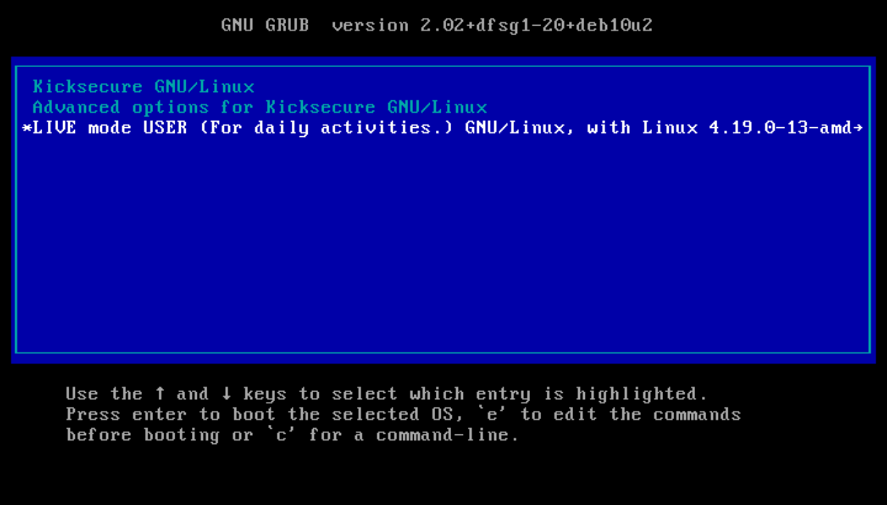

We believe security software like Kicksecure needs to remain Open Source and independent. Would you help sustain and grow the project? Learn more about our 14 year success story and maybe DONATE!
ISO
Live
ModeDocumentationAnti-Forensics
PrecautionsPrevious
page: ISO Live ModeIndex page:
DocumentationNext page: Anti-Forensics
Precautions
Live Mode for Kicksecure

Live Mode boot option selected.

Kicksecure ISO Live Mode
Kicksecure can be booted in Live Mode - a privacy-focused mode where nothing is saved after shutdown, making it ideal for handling sensitive data. This feature is available for both Kicksecure as the host OS and Kicksecure as the guest OS.
Introduction and Definitions
A live mode offers to use an operating system (OS) without leaving any traces. If the system is started in live mode, all software can be used as normal, files can be saved, tasks can be accomplished, but after the session all data is lost and gone. This is especially important for use cases where sensitive temporary data is involved.
Kicksecure live mode can be used if Kicksecure is a guest OS or a host OS itself. A host operating system (OS) is your main system, like the one you normally boot your computer into. A guest OS runs inside a virtual machine, like an app inside a window. Kicksecure can be booted into live mode in both cases. We will use HOST'' on this page if Kicksecure is a host OS and we will useVM GUEST'' if Kicksecure is a guest OS inside a virtual machine.
Live mode is accomplished by use of either,
- A) ISO Live Mode (see USB Installation); or
- B)
grub-livepackage (this wiki page), a package that is developed and maintained by the developers of Kicksecure and Whonix. grub-live can also be used by other Linux distributions because it is Freedom Software.
NOTE: This is unfortunately not available in Kicksecure for Qubes, but available in all other Kicksecure variants.
What data will be forgotten?
Booting into live mode will ensure all disk writes to the virtual hard drive are forgotten after shutdown because all writes go to volatile memory (RAM) instead of the hard disk. In other words, after shutdown everything that happened during a previous boot session is erased - like it never happened. This includes:
- everything that is created / changed / downloaded
- any websites visited, files downloaded or documents created
- any other modifications of the virtual hard drive or activity history
- This also holds true for malicious changes made by malware. For Kicksecure as VM GUEST also read our chapter #Helpful_tips_against_attack_vectors regarding malware.
Getting Started
Preparation
Applicability: These instructions are only needed if you plan to use live mode. If you usually use persistent mode (the default option), you can skip this section.
The very first time you start Kicksecure, make sure to boot it in persistent mode (this option is simply called "Kicksecure"). Do **not** use live mode on first boot. This helps Tor set up properly by setting up so called "Entry Guards."
After that first setup, you can choose to use live mode whenever you want if you prefer that nothing gets saved (this is sometimes called "non-persistence" or "amnesia").
Starting Live Mode
1. Platform-Specific Notice
- Kicksecure: No special steps required.
- Kicksecure-Qubes: Live mode is unavailable. [1]
2. Boot your computer (HOST'') or start the Kicksecure VM (VM GUEST'')
If your Kicksecure virtual machine (VM GUEST'') is already running, shut it down first. Then start it again to access the boot menu. If you're using Kicksecure as your main system (HOST''), just restart your computer.
3. Look at the Boot Menu
When the GRUB boot menu appears (see more on the GRUB bootloader here), wait until you see the menu
options. You'll see a list of choices. The currently selected option is
marked by an asterisk symbol
 and shown in white text on a blue background.
and shown in white text on a blue background.
Note: Boot option names have been renamed since version
17.3.9.2.
Figure: Persistent Mode
Boot

Note: Boot option names have been renamed since version
17.3.9.2.
The boot menu will show something like:

Kicksecure GNU/LinuxAdvanced options for Kicksecure GNU/LinuxLIVE mode USER (For daily activities.) GNU/Linux ...
What does the asterisk mean? It marks the option that is currently selected.
Can I select more than one? No -- you can only choose one option at a time.
4. Choose Live Mode
Use the keyboard arrow keys (up ↑ and down ↓) to move to the option labeled: LIVE mode USER (For daily activities.).
Figure: Live Mode Boot
(non-persistent)

5. Press ENTER
Once live mode is selected, press the Enter key.
6. Done
Kicksecure will now start in live mode -- where no data is saved after shutdown.
Functionality Test of Live mode
If you want to independently verify if live mode is working, follow these steps.
1. Run live mode (see #Starting Live Mode).
2. Create a new file in your /home/user
directory.
Could be any file such as for example a small text file.
3. Test additional file locations.
Folders:
/tmp$TMP/etc
4. Reboot your machine (HOST''). Or restart (via virtualizer) or reboot your Kicksecure VM (bothVM GUEST'').
5. After then reboot is complete check if you can find that file. If it's gone then live mode is functional.
6. Done.
The live mode functionality test has been completed.
HOST specifics (Kicksecure as host OS)
Best practices
It is recommended to use Live mode as a standard for sensitive data use cases. Live mode is also a useful tool for better privacy on the hard drive, as well as experimental changes like testing software.
But it is also recommended regularly boot into persistent mode (for example once per day) for installation of updates.
Live mode undefeated, even by persistent malware
For some users persistent malware is a concern. A persistent malware compromise after reboot however would require targeted malware which gains super user (root) access to re-mount the disk for write access. But re-mounting the disk for write access is not yet a default feature available to off-the-shelf malware; no such reports have come to our attention.
Boot standard - live mode or persistent mode
There are two choices:
grub-live(grub-live instructions here): Boots into persistent mode by default. The grub boot menu has an option to boot into live mode.grub-default-live(grub-default-live instructions here): Boots into live mode by default. The grub boot menu has an option to boot into persistent mode.
Kicksecure live mode vs Tails comparison
Kicksecure live mode is based on the grub-live package which is developed and maintained by the team behind Kicksecure and Whonix. The grub-live package is not only available for Whonix and Kicksecure, but also for many other Linux distributions. To compare Tails and Kicksecure live mode, see grub-live#comparison_between_grub-live_and_Tails.
VM GUEST specifics (Virtual Machine VM)
VM Live mode and RAM
 Tip: Since live mode makes each write go to RAM,
increasing the memory assigned to the VM will improve performance; for
example, if large files are regularly downloaded.
Tip: Since live mode makes each write go to RAM,
increasing the memory assigned to the VM will improve performance; for
example, if large files are regularly downloaded.
Anti-Forensics
VM Live Mode is NOT an anti-forensics feature! This is due to the limitations of the virtual machine. For anti-forensics check out Live Mode as HOST, described above.
Helpful tips against attack vectors
To keep your live mode unaffected even by malware memorize these instructions and follow them regularly.
Domain |
Recommendations |
|---|---|
Forensics |
By itself, starting a VM in live mode is not amnesic. Many users are unaware that activities performed inside the VM might be stored on the host mass storage device (hard drive, HDD, SSD) in locations that are hard to review (for the majority). Extra steps must be performed on the host operating system to minimize these traces -- see Anti-Forensics Precautions, or better, use Live Mode as HOST. |
Malware |
To prevent malware from remounting the hard drive as read-write it is strongly recommended to use read-only hard drive mode. This raises the bar as malware would need to break out of the VM to gain persistence, because there might be data leaks if
|
Other Precautions |
|
VM Live Mode vs VM Snapshots
Readers of this chapter should already be familiar with Kicksecure live mode, as described in the other chapters on this page, as well as the concept of VM snapshots.
Starting with a clean VM snapshot and later reverting to that snapshot should be even safer than using VM live mode. This is because snapshots are enforced from outside the VM, by the virtualizer. Therefore, snapshots are more secure.
It is also worth noting that running VM live mode uses more RAM than is allocated to the guest, since the OS runs entirely in memory. This means that, in some cases, it is more likely for VM live mode to experience disk thrashing, where the VM uses up all the allocated memory and becomes significantly slower. The snapshot approach does not have this issue with RAM.
It is difficult to imagine a case currently where the combination of VM live mode with reverting to a clean snapshot would be even safer. Perhaps in the case of a virtualizer bug with snapshots and/or user error forgetting to revert to a snapshot.
For even greater security, the user could consider Live Mode HOST or even host disk snapshots, such as Raw Disk Backup, although this would unfortunately be more cumbersome and time-intensive.
Troubleshooting
For known issues, see Live Check Indicator Systray Issues.
Host Live Mode in Combination with VM Live Mode
If the host operating system is booted in live mode, that includes everything that is running on the host. This means it also includes any VMs running on the host.
Therefore it is unnecessary to run VMs in live mode if the host is already running in live mode. The VMs will report that they are not running in live mode but they don't know any better and have no way to know by design.
The user could perform a Functionality Test of Live mode to verify this.
Live Check
Introduction Live Check
TODO: expand
Disable autostart of Live Check
Optional.
To disable live check systray, its startup file can be deleted.
1. Sysmaint Notice

- A
If using
user-sysmaint-split: The user must boot into the sysmaint session. For details and instructions on how to do so, see user-sysmaint-split. - B If using unrestricted admin mode: This sysmaint notice does not apply. Continue with the steps below.
2. Delete livecheck autostart file.
sudo rm /etc/xdg/autostart/livecheck.desktop
3. Done.
See Also
Forum Discussion about live mode
See: Whonix live mode / amnesia / amnesic / non-persistent / anti-forensics
https://forums.whonix.org/t/question-about-the-live-mode-indicator/23226
Footnotes
- ↑ Qubes issue: implement live boot by porting grub-live to Qubes - amnesia / non-persistent boot / anti-forensics
- ↑ There are two live mode options available,
grub-liveandro-mode-init. *grub-live: a new boot menu entry is created which must be selected manually, but it is a better failsafe and hence the recommended option. *ro-mode-init: the boot menu stays the same and the system automatically boots into live mode when it detects a read-only disk, otherwise it boots normally into persistent mode. The advantage of using this approach is that malware running in a VM cannot silently change settings to leave persistent traces. ** ro-mode-init documentation ** https://forums.whonix.org/t/whonix-live-mode-amnesia-amnesic-non-persistent-anti-forensics/3894/145
Categories: Documentation